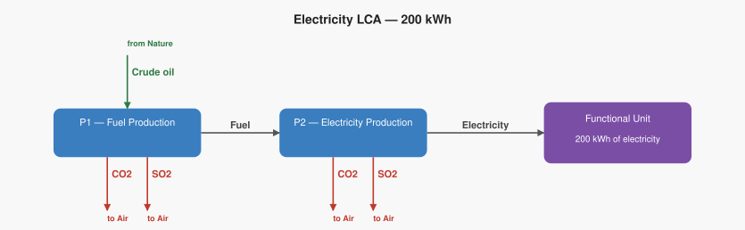
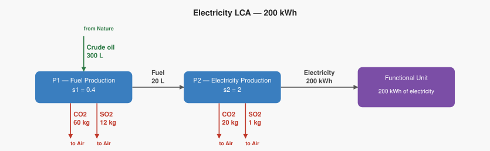

LCA Example: Producing 200 kWh of Electricity
Overview
Life Cycle Assessment (LCA) has two main computational phases:
- Life Cycle Inventory (LCI) — a bookkeeping and scaling problem. Trace all flows (materials, energy, emissions, extractions) through a process tree and normalize everything to the functional unit.
- Life Cycle Impact Assessment (LCIA) — a modeling problem. Multiply inventory flows by characterization factors to convert them into impact category scores.
The math is linear algebra: solve for how much each process must run, then accumulate elementary flows, then apply impact factors.
This example covers a fossil-fuel electricity system: crude oil is refined into fuel, and that fuel is burned to generate electricity. It is a real-world system with only two processes, making it a clean introduction to the matrix method before tackling larger supply chains.
Functional Unit
200 kilowatt hours (kWh) of electricity produced
Everything in the inventory is scaled to this reference. No fuel is required outside the network — all fuel produced stays inside the system and is consumed by the electricity generation process.
Process Tree
The system has two processes arranged as a simple chain:
| Process | Reference output | Technosphere inputs |
|---|---|---|
| P1 — Fuel production | 100 L fuel | 300 L crude oil (from nature) |
| P2 — Electricity production | 100 kWh electricity | 20 L fuel (from P1) |
Elementary flows
Emission and extraction rates are fixed properties of each process, collected from measurements or databases. Rates are always stated as positive numbers — direction (emission vs. extraction) is encoded by the flow type, not by sign.
| Process | Flow | Type | Rate |
|---|---|---|---|
| P1 — Fuel production | Crude oil | Extraction from ground | 300 L per 100 L fuel produced |
| P1 — Fuel production | CO₂ | Emission to air | 60 kg per 100 L fuel produced |
| P1 — Fuel production | SO₂ | Emission to air | 12 kg per 100 L fuel produced |
| P2 — Electricity production | CO₂ | Emission to air | 20 kg per 100 kWh produced |
| P2 — Electricity production | SO₂ | Emission to air | 1 kg per 100 kWh produced |
Process graphs


Arrow convention
- Product flows go down through the chain toward the functional unit
- Emissions point out of a process (to the atmosphere)
- Extractions point into a process from nature (crude oil comes in from the ecosphere above)
- The exact quantities on the internal fuel arrow are unknown until we solve for the scaling vector s
Step 0 — By-Hand Calculation
Before introducing matrices, we can work through the exact same calculation by tracing the supply chain step by step. This produces identical results to the matrix approach and lets you verify every number.
Step 0a — How many times does each process need to run?
We need 200 kWh of electricity. Work backwards through the chain:
P2 (electricity production) makes 100 kWh per run. We need 200 kWh, so:
$$ s_2 = \frac{200 \ \cancel{\text{kWh}}}{100 \ \cancel{\text{kWh}}/\text{run}} = \mathbf{2.0 \ \text{runs}} $$
P2 running at level 2.0 consumes fuel:
$$ 2.0 \ \text{runs} \times \frac{20 \ \text{L}}{\text{run}} = 40 \ \text{L of fuel needed} $$
P1 makes 100 L per run, so:
$$ s_1 = \frac{40 \ \cancel{\text{L}}}{100 \ \cancel{\text{L}}/\text{run}} = \mathbf{0.4 \ \text{runs}} $$
Check — does supply meet demand?
| Flow | Produced | Consumed | Balance |
|---|---|---|---|
| Electricity | 2.0 × 100 = 200 kWh | delivered to functional unit | ✓ |
| Fuel | 0.4 × 100 = 40 L | P2 consumes 2.0 × 20 = 40 L | ✓ |
| Crude oil | comes from nature | 0.4 × 300 = 120 L extracted | ✓ |
These activity levels are exactly the scaling vector s = (0.4, 2.0) solved in Step 2.
A note on language: Calling these values "runs" is a useful intuition, but the more precise term is activity level (sometimes scaling factor) — how much of each process's reference output the system needs, expressed as a multiple of that process's output per run. The word "activity level" works better than "runs" because it can be a fraction (e.g. 0.4 means the process operates at 40% capacity, not "0.4 of a run"). You will see "activity level" and "scaling factor" used interchangeably in LCA textbooks.
Step 0b — Calculate total emissions and extractions
Multiply each process's rate by its activity level. The units cancel to leave kg or L.
P1 — Fuel production (activity level 0.4):
$$ \text{Crude oil} = 0.4 \ \cancel{\text{runs}} \times \frac{300 \ \text{L}}{\cancel{\text{run}}} = \mathbf{120 \ \text{L}} $$
$$ \text{CO}_2 = 0.4 \ \cancel{\text{runs}} \times \frac{60 \ \text{kg}}{\cancel{\text{run}}} = \mathbf{24 \ \text{kg}} $$
$$ \text{SO}_2 = 0.4 \ \cancel{\text{runs}} \times \frac{12 \ \text{kg}}{\cancel{\text{run}}} = \mathbf{4.8 \ \text{kg}} $$
P2 — Electricity production (activity level 2.0):
$$ \text{CO}_2 = 2.0 \ \cancel{\text{runs}} \times \frac{20 \ \text{kg}}{\cancel{\text{run}}} = \mathbf{40 \ \text{kg}} $$
$$ \text{SO}_2 = 2.0 \ \cancel{\text{runs}} \times \frac{1 \ \text{kg}}{\cancel{\text{run}}} = \mathbf{2.0 \ \text{kg}} $$
Add across all processes to get the total inventory:
| Elementary flow | From P1 | From P2 | Total |
|---|---|---|---|
| Crude oil (extraction) | 120 L | — | 120 L |
| CO₂ (emission) | 24 kg | 40 kg | 64 kg |
| SO₂ (emission) | 4.8 kg | 2.0 kg | 6.8 kg |
Step 0c — Summary of by-hand results
To produce 200 kWh of electricity from crude oil:
- P1 runs at activity level 0.4 (extracts 120 L of crude oil)
- P2 runs at activity level 2.0 (burns 40 L of fuel)
- Total CO₂ released: 64 kg
- Total SO₂ released: 6.8 kg
These numbers will appear again at the end of the matrix calculation.
Step 1 — Build the Technology Matrix A
The technology matrix A encodes what each process produces and consumes in the technosphere. Columns are processes, rows are products.
- Diagonal entries: reference output of each process (positive)
- Off-diagonal entries: technosphere demands — what one process needs from another (negative)
$$ A = \begin{pmatrix} 100 & -20 \ 0 & 100 \end{pmatrix} \quad \begin{array}{l} \leftarrow \text{Fuel (L)} \ \leftarrow \text{Electricity (kWh)} \end{array} $$
Columns left to right: P1 (fuel production), P2 (electricity production).
Reading the matrix: - P1 produces 100 L of fuel (diagonal, positive) - P2 consumes 20 L of fuel from P1 (off-diagonal, negative) - P1 produces no electricity (zero) - P2 produces 100 kWh of electricity (diagonal, positive)
Step 2 — Solve for the Scaling Vector s
The demand vector f expresses the functional unit — how much of each product must exit the network for external use. Each entry corresponds to one row of A:
$$ f = \begin{pmatrix} f_1 \ f_2 \end{pmatrix} \quad \begin{array}{l} \leftarrow \text{Fuel demand outside network (L)} \ \leftarrow \text{Electricity demand outside network (kWh)} \end{array} $$
For this example:
- f₂ = 200 — we want 200 kWh of electricity delivered to the final user.
- f₁ = 0 — all the fuel P1 produces goes straight to P2 as an internal input. None of it leaves the system for external use. f captures only what exits the network, so fuel gets a zero.
Plugging in the values:
$$ f = \begin{pmatrix} 0 \ 200 \end{pmatrix} $$
Solve $A \cdot s = f \Rightarrow s = A^{-1} \cdot f$. Since A is lower triangular, back-substitute row by row:
$$ \text{Row 2 (electricity):} \quad 100 \times s_2 = 200 \quad\Rightarrow\quad s_2 = 2.0 $$
$$ \text{Row 1 (fuel):} \quad 100 \times s_1 - 20 \times 2.0 = 0 \quad\Rightarrow\quad s_1 = \frac{40}{100} = 0.4 $$
$$ s = \begin{pmatrix} 0.4 \ 2.0 \end{pmatrix} $$
P2 runs at activity level 2.0 (delivering 2.0 × 100 = 200 kWh). P1 runs at activity level 0.4 (producing 0.4 × 100 = 40 L of fuel, exactly what P2 needs, with nothing left over to exit the network).
Step 3 — Build the Intervention Matrix B
The intervention matrix B contains the rates for each elementary flow per run of each process. Extractions from nature are stored as negative values (they are inputs flowing in from the environment). Emissions to air are stored as positive values.
$$ B = \begin{pmatrix} -300 & 0 \ 60 & 20 \ 12 & 1 \end{pmatrix} \quad \begin{array}{l} \leftarrow \text{Crude oil (extraction from ground, L)} \ \leftarrow \text{CO₂ (emission to air, kg)} \ \leftarrow \text{SO₂ (emission to air, kg)} \end{array} $$
Columns left to right: P1, P2.
Reading the matrix: - P1 extracts 300 L of crude oil per run (negative — flows in from nature) - P2 extracts no crude oil directly (zero) - P1 emits 60 kg CO₂ per run - P2 emits 20 kg CO₂ per run - P1 emits 12 kg SO₂ per run - P2 emits 1 kg SO₂ per run
Step 4 — Compute the Inventory Vector R = B · s
Multiply each row of B by the scaling vector s:
$$ R[\text{Crude oil}] = (-300 \times 0.4) + (0 \times 2.0) = -120 \text{ L} $$
$$ R[\text{CO}_2] = (60 \times 0.4) + (20 \times 2.0) = 24 + 40 = \mathbf{64 \text{ kg}} $$
$$ R[\text{SO}_2] = (12 \times 0.4) + (1 \times 2.0) = 4.8 + 2.0 = \mathbf{6.8 \text{ kg}} $$
$$ R = \begin{pmatrix} -120 \ 64 \ 6.8 \end{pmatrix} $$
The negative sign on crude oil simply means it is extracted from nature (an input into the system). The magnitude 120 L is how much nature gives up to produce 200 kWh of electricity.
This is the life cycle inventory — the total elementary flows attributable to producing 200 kWh of electricity, aggregated across both processes.
Full Calculation Chain
$$ R = B \cdot A^{-1} \cdot f $$
| Symbol | Name | Dimensions |
|---|---|---|
| $f$ | Demand vector | $p \times 1$ (products) |
| $A$ | Technology matrix | $p \times n$ (products × processes) |
| $s = A^{-1}f$ | Scaling vector (activity levels) | $n \times 1$ (processes) |
| $B$ | Intervention matrix | $e \times n$ (elementary flows × processes) |
| $R = Bs$ | Inventory vector | $e \times 1$ (elementary flows) |
In this example: p = 2 products, n = 2 processes, e = 3 elementary flows.
In real LCA software (SimaPro, OpenLCA), A is drawn from a background database like ecoinvent and can have thousands of rows and columns — but the matrix structure and the $R = B \cdot A^{-1} \cdot f$ equation are identical.
What Happens if f Changes?
Because f drives everything, changing the goal changes every result automatically.
Scenario A — Original goal (f₁ = 0, f₂ = 200):
| Value | |
|---|---|
| s₁ (fuel production) | 0.4 |
| s₂ (electricity production) | 2.0 |
| Crude oil extracted | 120 L |
| CO₂ emitted | 64 kg |
| SO₂ emitted | 6.8 kg |
Summary of Results
| Value | |
|---|---|
| Functional unit | 200 kWh electricity |
| $s_1$ — fuel production activity level | 0.4 |
| $s_2$ — electricity production activity level | 2.0 |
| Crude oil extracted | 120 L |
| CO₂ emitted (total) | 64 kg |
| SO₂ emitted (total) | 6.8 kg |
Every number matches the by-hand calculation in Step 0 exactly. The matrix approach simply packages the same arithmetic into a compact, scalable form that works even when there are hundreds or thousands of processes.